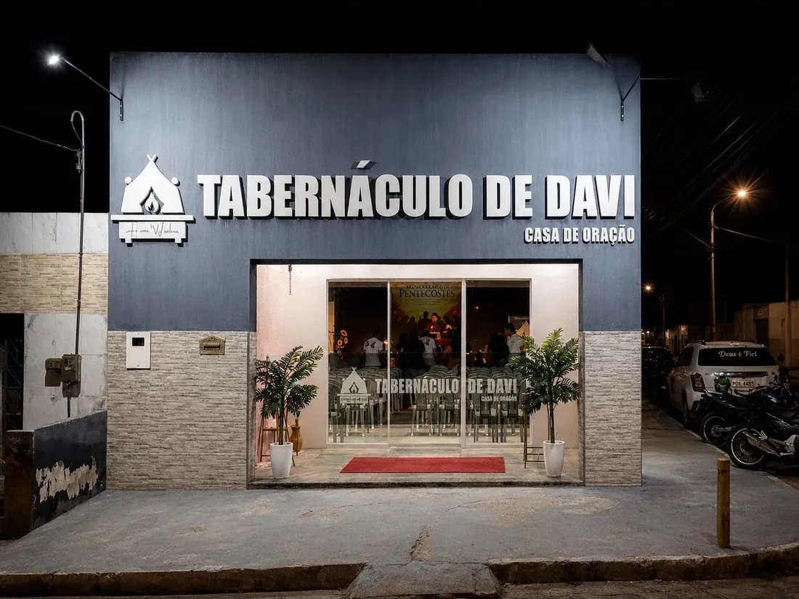
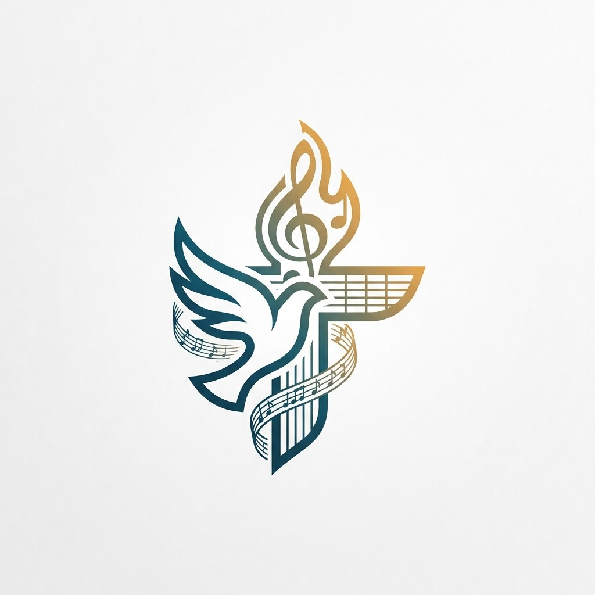
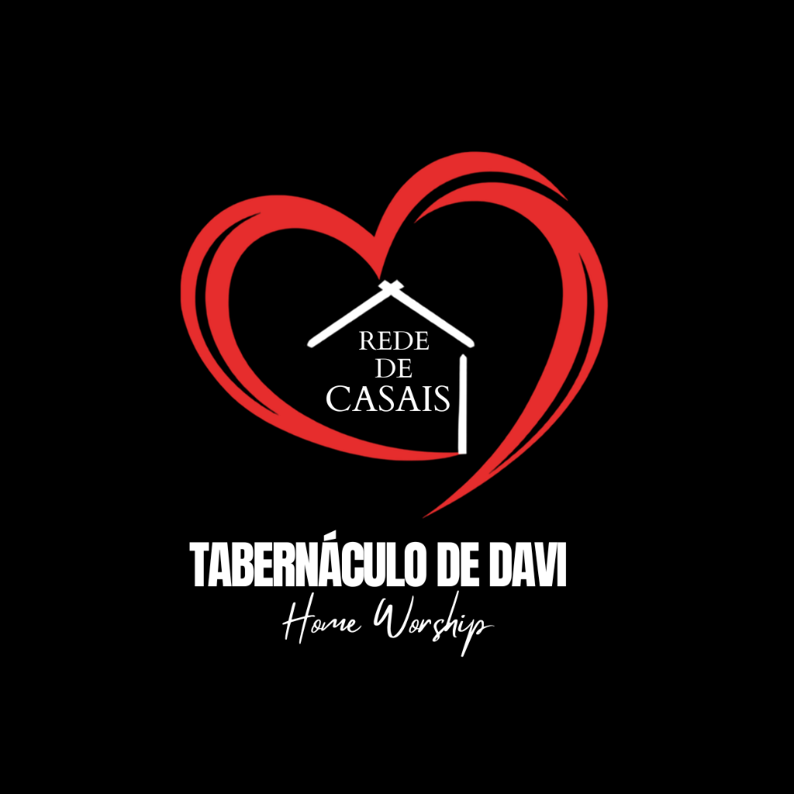
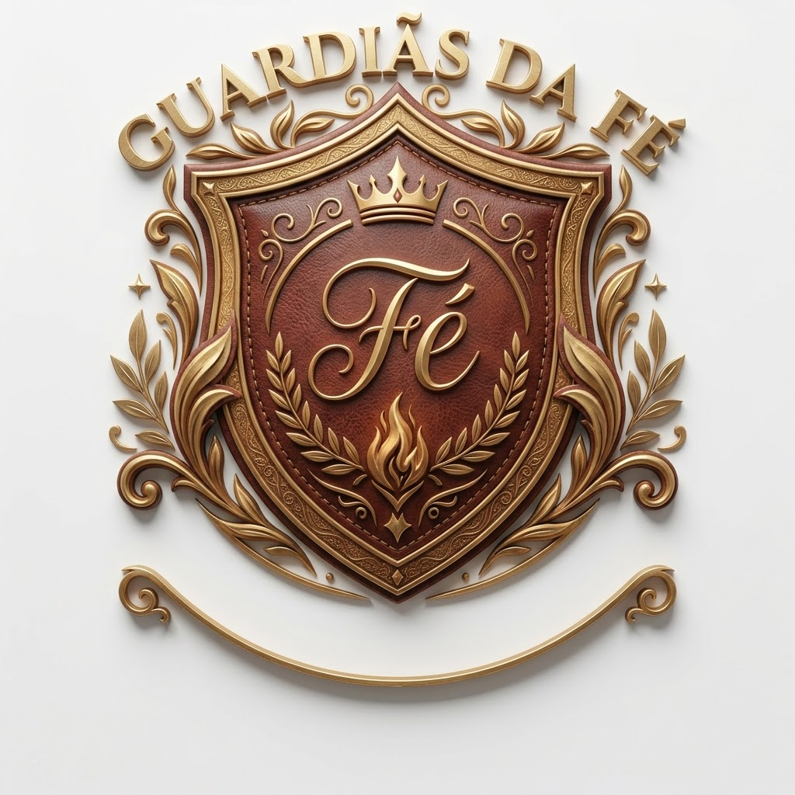
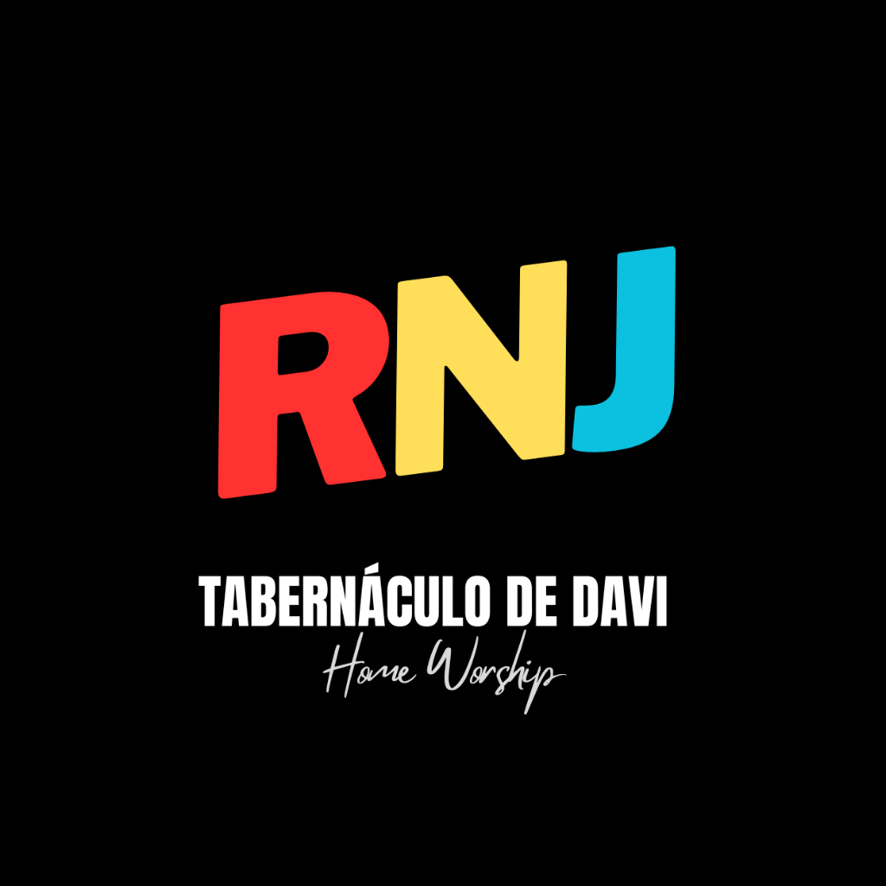
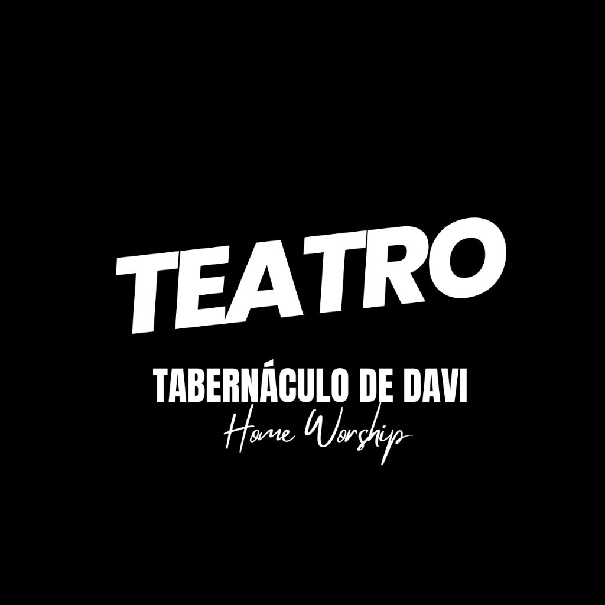

A nossa missão é obedecer ao IDE de Jesus Cristo, proclamando o evangelho com ousadia, paixão e amor até os confins da Terra (Mateus 28:19-20). Somos um povo sacerdotal consagrado a ministrar ao Senhor em Caruaru, Pernambuco.
Conheça as frentes ministeriais que servem a Deus e às famílias em nossa igreja.
Ver DepartamentosParticipe da semeadura da obra de Deus através do PIX com facilidade e segurança.
Semear com PIXA Palavra de Deus é viva, eficaz e permanece para sempre. Receba uma promessa do Senhor para o seu coração neste dia.
"Carregando promessa bíblica..."Referência Bíblica

A Igreja Tabernáculo de Davi - Casa de Oração tem como fundamento bíblico a restauração do altar de adoração e intercessão contínua, conforme profetizado em Amós 9:11 e reafirmado em Atos 15:16: "Depois disto voltarei e reedificarei o tabernáculo de Davi, que está caído; levantá-lo-ei das suas ruínas e tornarei a edificá-lo."
Somos um povo sacerdotal em Caruaru, Pernambuco, consagrado a ministrar diante do Senhor, interceder pelas nações e viver em profunda intimidade com Deus, proclamando a verdade do evangelho com poder, amor e santidade.
A nossa missão é obedecer ao IDE de Jesus Cristo, proclamando o evangelho com ousadia, paixão e amor, até os confins da Terra (Mateus 28:19-20). Somos chamados para evangelizar os perdidos levando salvação e libertação através da Palavra e do poder do Espírito Santo; estabelecer um altar de oração e adoração contínua, onde a presença de Deus habita dia e noite; e formar discípulos comprometidos preparados para influenciar esta geração com santidade, amor e verdade.
A visão do Tabernáculo de Davi - Casa de Oração é restaurar o altar da adoração e intercessão contínua, conforme o modelo bíblico do tabernáculo de Davi (Amós 9:11; Atos 15:16). Vemos uma igreja cheia do Espírito Santo, apaixonada por Jesus e rendida à Sua presença; onde oração e adoração não param, dia e noite, como incenso constante diante do trono de Deus (Salmo 141:2); que evangeliza com compaixão; que forma discípulos maduros e prepara o caminho para a volta do Senhor Jesus.
Assista ao vídeo especial do nosso canal contando o início da igreja, como Deus levantou este altar de adoração e oração contínua em Caruaru e a trajetória de fidelidade à Sua Palavra.
"Porque a minha casa será chamada casa de oração para todos os povos."
"Naquele dia levantarei o tabernáculo caído de Davi, e repararei as suas brechas, e levantarei as suas ruínas, e o edificarei como nos dias antigos."
"Ide, portanto, fazei discípulos de todas as nações, batizando-os em nome do Pai, e do Filho, e do Espírito Santo; ensinando-os a guardar todas as coisas que eu vos tenho mandado."
"Depois disto voltarei e reedificarei o tabernáculo de Davi, que está caído; levantá-lo-ei das suas ruínas e tornarei a edificá-lo."
"Uma coisa pedi ao Senhor e a buscarei: que possa morar na casa do Senhor todos os dias da minha vida, para contemplar a formosura do Senhor e aprender no seu templo."
Princípios bíblicos inegociáveis que norteiam cada passo, ministério e vida em nossa congregação.
Cremos na adoração como o centro de todas as coisas. Buscamos honrar a Deus com tudo o que somos, oferecendo louvor constante, íntimo e sincero, como nos dias do rei Davi.
1 Crônicas 16:4 • Salmo 132:4-5Nos comprometemos com a oração ininterrupta, pois cremos que ela move céus e terra. Somos uma casa de intercessão que se posiciona na brecha pelas famílias, igrejas, cidades e nações.
Isaías 62:6-7 • Apocalipse 5:8Vivemos o IDE de Jesus. Levamos o evangelho a todos os lugares com ousadia, compaixão e demonstração do poder de Deus, buscando alcançar os perdidos com a mensagem da cruz.
Marcos 16:15 • Romanos 1:16A presença do Senhor é a nossa prioridade máxima. Tudo o que fazemos nasce da intimidade com Deus e do desejo de agradar Seu coração.
Êxodo 33:15Somos chamados à pureza de coração e à obediência total. Vivemos de forma consagrada, refletindo o caráter de Cristo em todas as áreas da vida.
1 Pedro 1:15-16Amamos a Deus de todo o coração e servimos ao próximo com compaixão e humildade. O amor é a base de todas as nossas ações.
Mateus 22:37-39 • João 13:35Valorizamos a comunhão, a honra mútua e o trabalho em unidade. Reconhecemos os dons uns dos outros e caminhamos juntos como família.
Efésios 4:3-4Treinamos filhos e filhas para viverem como discípulos radicais, fundamentados na Palavra, guiados pelo Espírito e prontos para servir e liderar.
Mateus 28:20 • 2 Timóteo 2:2Agimos com misericórdia, ajudando os necessitados, sendo resposta às dores da sociedade e levando o Reino de Deus em obras e palavras.
Tiago 1:27 • Miquéias 6:8Homens e mulheres levantados por Deus para apascentar o rebanho com amor, oração e ensino bíblico.
Consagrado à restauração do altar de adoração e à proclamação fervorosa das Escrituras Sagradas em Caruaru, Pernambuco. Com visão bíblica e coração pastoral, lidera a igreja na formação de discípulos comprometidos com o IDE de Jesus Cristo.
Falar com o PastorMulher de oração e conselheira de famílias, líder do ministério Guardiãs da Fé. Seu ministério tem sido canal de edificação de lares e fortalecimento espiritual para as famílias da nossa congregação em Caruaru.
Falar com a PastoraCada membro é um ministro chamado por Deus para servir na Casa de Oração com seus dons e talentos.

Levitas e músicos dedicados a ministrar com consagração e excelência nos cultos da igreja.

Fortalecendo alianças, acolhendo famílias e promovendo a edificação de lares no padrão divino.

Mulheres valorosas e dedicadas à oração que buscam a presença do Senhor e edificam seus lares.
Servindo com amor, honra e acolhimento para que cada visitante seja recebido com carinho na Casa de Deus.
Ensinando as verdades eternas às crianças com amor, alegria e fidelidade bíblica em todas as reuniões.
Som, iluminação e transmissão de dados anunciando o evangelho com clareza e dedicação.

Juventude apaixonada por Jesus Cristo, pura em santidade e comprometida com o discipulado bíblico.

Expressões artísticas e representações que proclamam a mensagem da redenção com sensibilidade e impacto.
Reunimo-nos em três cultos semanais para orar, adorar ao Senhor, buscar cura, libertação e comunhão com a família de Deus em Caruaru.
Encontro fervoroso consagrado à oração, clamor pelas famílias e busca profunda pela presença do Espírito Santo para consagrar a semana diante do Senhor.
Culto consagrado à oração de fé, clamor pelas causas difíceis, libertação espiritual e cura de enfermos pelo poder e autoridade de Jesus Cristo. Venha receber a sua vitória.
O principal encontro de adoração, louvor congregacional e proclamação da Palavra de Deus para toda a igreja e famílias de Caruaru. Ministração pastoral e comunhão fraterna.
"Cada um dê conforme determinou em seu coração, não com pesar ou por obrigação, pois Deus ama quem dá com alegria." (2 Coríntios 9:7)
Abra o aplicativo do seu banco, escolha a opção PIX e aponte a câmera para o QR Code ou clique no botão para copiar o código:
Se você prefere efetuar sua contribuição através de transferência bancária ou aplicativo de pagamentos, utilize as informações oficiais:
| Favorecido: | Erivonaldo Teixeira de Lima (Pastor Presidente) |
| Instituição / Banco: | 341 - Banco Itaú Unibanco |
| Chave PIX: | erivonaldo.lima@hotmail.com |
| Tipo de Chave: | E-mail / QR Code Oficial Itaú |
| Finalidade: | Dízimos, Ofertas e Missões |
As portas do Tabernáculo de Davi estão abertas para receber você e sua família em Caruaru, Pernambuco.
Um lugar de adoração, acolhimento e presença de Deus.
Base Bíblica
Descrição detalhada.